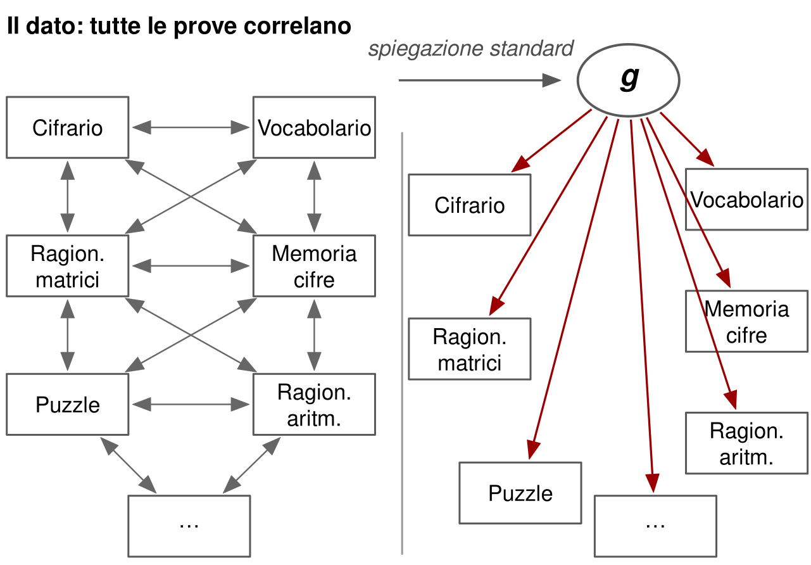
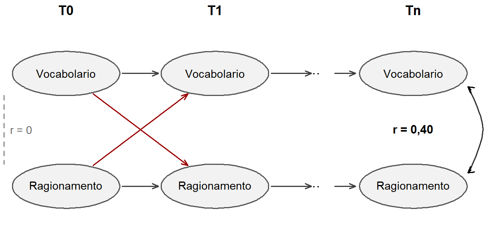
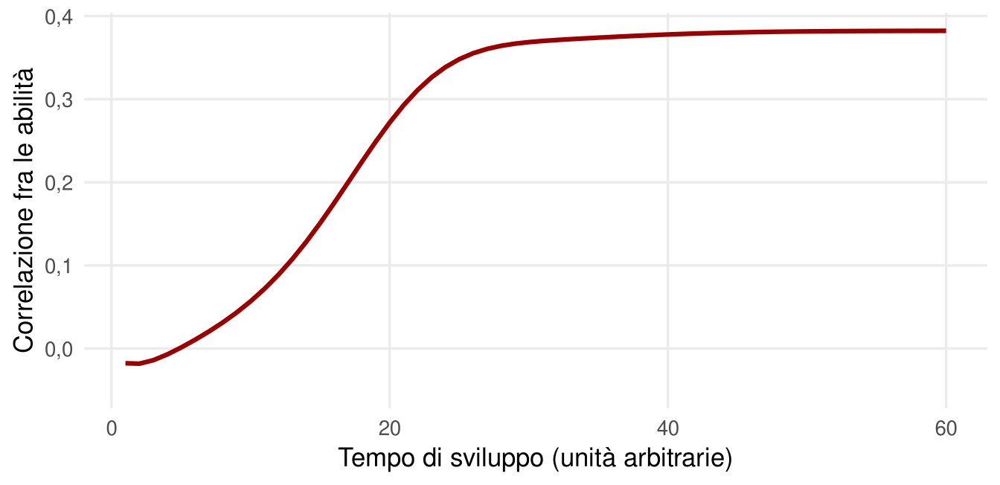

21 Si può spiegare la positive manifold senza un fattore generale?
La positive manifold è uno dei risultati più solidi della psicologia. Su questo non c’è disaccordo. Il disaccordo riguarda la spiegazione. Quella standard, presentata nei capitoli sui modelli dell’intelligenza, ipotizza un insieme di cause comuni riassunte dal fattore generale g (Figura 21.1). Ma quelle cause restano in buona parte misteriose, e a molti ricercatori l’idea di una variabile latente non osservata sembra un’ipotesi troppo comoda.
Negli ultimi vent’anni sono emerse almeno due teorie che cercano di spiegare le correlazioni fra abilità senza un fattore generale. Sono alternative serie, che meritano di essere conosciute. Sono anche, a oggi, minoritarie. Questo approfondimento spiega perché.
21.1 Un vecchio precedente
L’idea non è nuova. Già nel 1916 Godfrey Thomson mostrò che una positive manifold può emergere anche senza un fattore generale: basta che ogni prova attinga a un campione casuale di molti processi elementari, e che prove diverse condividano in parte gli stessi processi (Thomson, 1916). Più processi due prove hanno in comune, più correlano. La teoria del campionamento di Thomson è stata riproposta in forma moderna, ed è compatibile con molti dei dati che sostengono g (Bartholomew et al., 2009). Mostra un punto importante: il fatto che un modello a un fattore descriva bene i dati non dimostra, da solo, che esista una singola causa comune.
21.2 La teoria della sovrapposizione dei processi
La teoria della sovrapposizione dei processi (POT) aggiorna l’idea di Thomson con il linguaggio della psicologia cognitiva (Kovacs & Conway, 2016). Ogni prova richiede sia processi specifici del dominio, sia processi esecutivi generali, come il controllo dell’attenzione e la memoria di lavoro. Questi ultimi sono coinvolti in molte prove e funzionano come un collo di bottiglia: limitano la prestazione ovunque. Le prove correlano perché condividono quei limiti.
La teoria spiega alcuni fatti noti. Il primo è che le prove più complesse, come i problemi di ragionamento con molte regole da tenere a mente, sono le più legate al fattore generale: sono anche quelle che richiedono più controllo esecutivo.
Il secondo fatto è noto da quasi un secolo come legge dei rendimenti decrescenti di Spearman: nei gruppi con abilità più alta le correlazioni fra prove diverse, e quindi il peso del fattore generale, tendono a essere più basse. Una meta-analisi ne ha confermato l’esistenza, con un effetto di entità modesta (Blum & Holling, 2017). La teoria della sovrapposizione dei processi lo spiega in modo naturale: se i processi esecutivi limitano la prestazione soprattutto quando sono deboli, le prove dipendono più spesso dagli stessi limiti nelle persone meno capaci. Anche un modello con un fattore generale può però accomodare il dato, ammettendo che il suo peso vari con il livello.
Ma a uno sguardo attento non è una vera alternativa all’ipotesi delle cause comuni. Sostituisce un fattore generale con un insieme di processi generali, cioè con altre cause comuni, descritte con maggiore dettaglio cognitivo. Ed è rimasta minoritaria soprattutto perché quei processi esecutivi non sono stati isolati e misurati in modo abbastanza chiaro da metterla alla prova.
21.3 Il mutualismo
Il mutualismo propone qualcosa di concettualmente più radicale (van der Maas et al., 2006). Immaginiamo che, all’inizio dello sviluppo, abilità diverse siano indipendenti. Durante la crescita, però, si sostengono a vicenda, in un intreccio di influenze reciproche che agisce soprattutto nel lungo periodo (Figura 21.2).
![Rete di sette ovali: abilità visive, abilità verbali, abilità uditive, memoria a lungo termine, ragionamento, memoria di lavoro, velocità di elaborazione. Frecce grigie collegano molte coppie: per esempio le abilità visive influenzano il ragionamento, la velocità di elaborazione influenza abilità visive, ragionamento e memoria di lavoro, le abilità uditive influenzano la memoria di lavoro, che a sua volta influenza ragionamento, abilità verbali e memoria a lungo termine. Due frecce rosse uniscono in entrambe le direzioni abilità verbali e ragionamento.](alternative-a-g_files/figure-html/fig-rete-mutualismo-1.png)
Un esempio aiuta (Figura 21.3). Un vocabolario più ricco aiuta a capire concetti e spiegazioni, quindi a rappresentarsi meglio i problemi e a ragionare, prima su problemi esposti a parole e poi anche su quelli non verbali. Un ragionamento migliore aiuta a ricavare il significato di parole nuove dal contesto, quindi ad arricchire il vocabolario. Ripetuti per anni, questi scambi reciproci producono abilità correlate anche partendo da abilità indipendenti, come mostra una semplice simulazione (Figura 21.4). La positive manifold sarebbe un fenomeno emergente, non il segno di una causa comune.

È l’unica vera alternativa logica alle cause comuni: se due variabili correlano e nessuna terza variabile le influenza entrambe, devono influenzarsi fra loro. Il mutualismo appartiene alla famiglia dei modelli di rete, che hanno avuto una certa fortuna nella psicologia della personalità e sono molto vivi in quella clinica, dove i disturbi vengono descritti come reti di sintomi che si mantengono a vicenda (Robinaugh et al., 2020).

Alcuni studi longitudinali hanno trovato andamenti compatibili con il mutualismo. In adolescenti e giovani adulti, per esempio, un vocabolario migliore prevedeva una crescita successiva del ragionamento e viceversa, al netto dei livelli di partenza (Kievit et al., 2017).
21.4 Le critiche
Le critiche al mutualismo come teoria generale dell’intelligenza sono però numerose.
- La positive manifold c’è fin dall’inizio. Emerge appena le abilità diventano misurabili, nei primi anni di vita, e non sembra rafforzarsi in modo marcato con l’età, come il mutualismo prevederebbe (Gignac, 2014).
- Il fattore generale resta più parsimonioso. Una volta considerato g, le relazioni residue fra abilità specifiche sono minime o nulle. Una rete complessa di influenze reciproche non aggiunge capacità esplicativa (Gignac, 2016). Anche nei dati sui gemelli, i modelli fattoriali descrivono le relazioni fra abilità almeno altrettanto bene dei modelli di rete (Knyspel & Plomin, 2024).
- Le previsioni sono imprecise. Quali abilità influenzano quali? In quale periodo? Con quale intensità? Senza risposte precise, la teoria è difficile da falsificare.
- Le evidenze longitudinali sono limitate. Riguardano di solito due o tre abilità alla volta e usano modelli, come quelli a ritardi incrociati, che non distinguono bene fra influenze reciproche e differenze stabili fra persone (Hamaker et al., 2015).
21.5 Che cosa sopravvive
Il mutualismo sopravvive soprattutto in una versione compatibilista: un fattore generale e una rete di influenze reciproche possono coesistere (Savi et al., 2019). È plausibile che abilità diverse si rinforzino a vicenda in alcuni periodi critici dello sviluppo, in misura diversa da persona a persona, anche in presenza di cause comuni. Come cornice concettuale resta utile per pensare lo sviluppo in modo dinamico, e in particolare il neurosviluppo, dove difficoltà in un’area possono propagarsi ad altre. Il prezzo della versione compatibilista è che perde la sua radicalità: se servono anche variabili latenti, la rete non è più un’alternativa al fattore generale, ma un’aggiunta.
Il bilancio, oggi, è questo. Le alternative a g hanno il merito di ricordare che un fattore statistico non è una spiegazione causale e che la positive manifold potrebbe avere origini diverse da una singola causa comune. Ma nessuna ha ancora prodotto previsioni precise che il modello gerarchico non riesca a spiegare altrettanto bene. Finché non lo faranno, restano ipotesi da seguire con interesse, non sostituti del fattore generale.